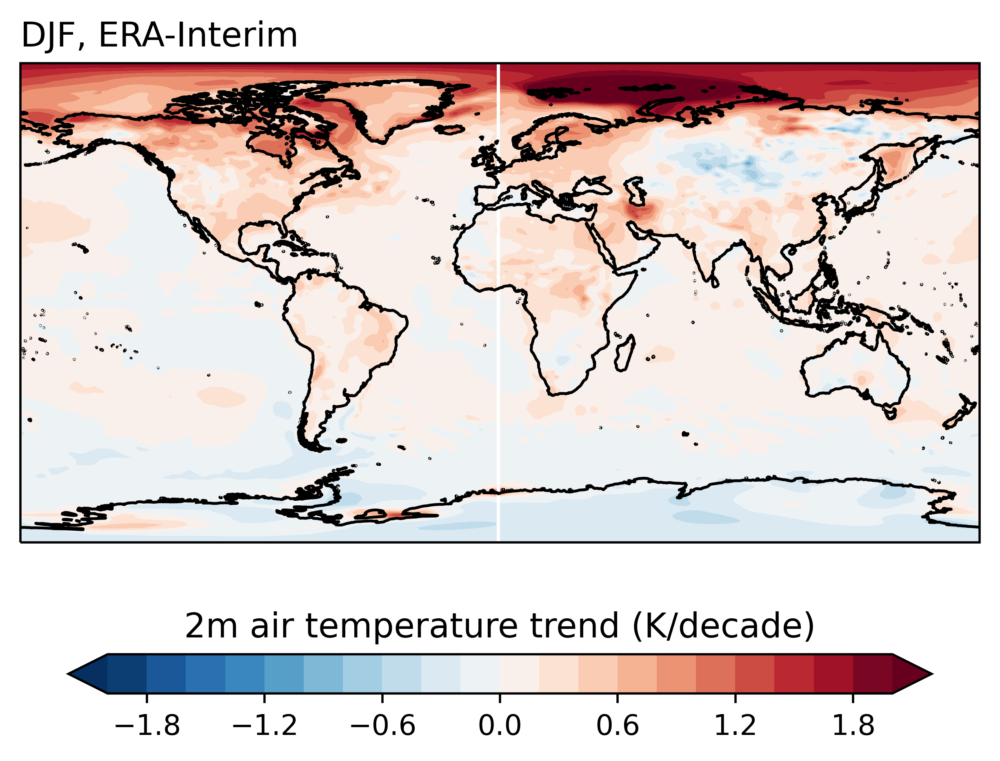
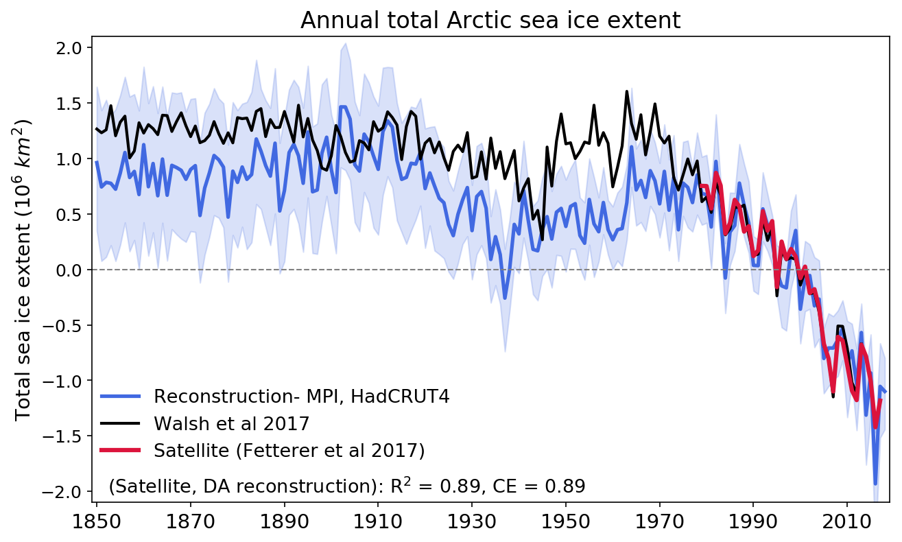
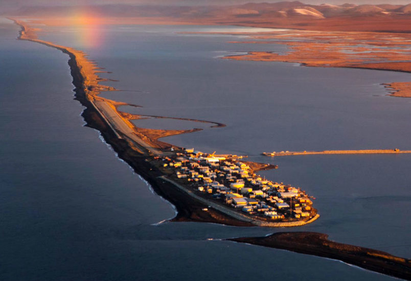

Ice Climate Group
Atmospheric Sciences, University of Washington

Polar and global climate
We are interested in many aspects of polar and global climate and their linkages. Robin is studying teleconnections and the role of ENSO in sea ice variability. Andrew is working on understanding the influence of Antarctic topography on global climate and the influence of volcanoes on polar climate. Sea ice geoengineering. Lettie is using a hierarchy of modelling approaches to investigate polar climate seasonality. Ed is running climate model simulations to quantify the role of winds in polar climate variability.

Sea ice modeling
Our group is passionate about improving the skill of sea ice models through development of new model physics and parametrizations. Cecilia is a leading sea ice expert and an active member of the polar climate community; she has been deeply involved in many advances related to representing sea ice in global climate models. Lettie and Cecilia have developed new model physics to represent the evolution of the sea ice floe size distribution, which is important for the seasonal melt and growth of Arctic and Antarctic sea ice. We are currently developing new coupled modelling configurations that allow interactions between ocean surface waves and sea ice.

Reconstructing sea ice
We combine different types of observations with climate models using data assimilation to reconstruct Arctic sea ice conditions across various timescales. Molly is using these methods to reconstruct sea ice thickness using satellite observations over the past few decades. Katie focuses on reconstructing Arctic sea ice on longer timescales ranging from seasonal to millennial timescales.

Community-driven climate resiliency
Ed, Cecilia, and Ellen have joined an interdisciplinary team of UW polar researchers and the Iñupiaq community members of Kivalina to create a model of community-driven polar research. Areas of focus include safety, food sovereignty, and climate resiliency. We meet regularly with community leaders in Kivalina to identify critical issues facing the community, and to develop methods to address and adapt to these issues using both academic and traditional Indigenous strategies.

Sea ice prediction and forecasting
We want to make better predictions of sea ice and sea ice variability on subseasonal timescales. We use a combination of dynamical forecasting and climate models and statistical models to better understand and predict day-to-day changes in sea ice. Robin has been quantifying the roles of tropospheric polar vortices and Arctic cyclones on driving a response in sea ice, and whether or not cyclones affect sea ice predictability. Jun is developing machine learning models of sea ice motions. Marie is studying the predictability of sea ice extremes.

Polar observations
We are committed to integrating observations with models to better understand and predict polar change. Ed is working with ICESat-2 to detect ocean surface waves in the marginal ice zone. Lettie uses satellite observations to evaluate the performance of climate models. Vince is analyzing rare in situ observations of ocean surface waves in polar sea ice cover to understand how we can advance their representation in climate models.